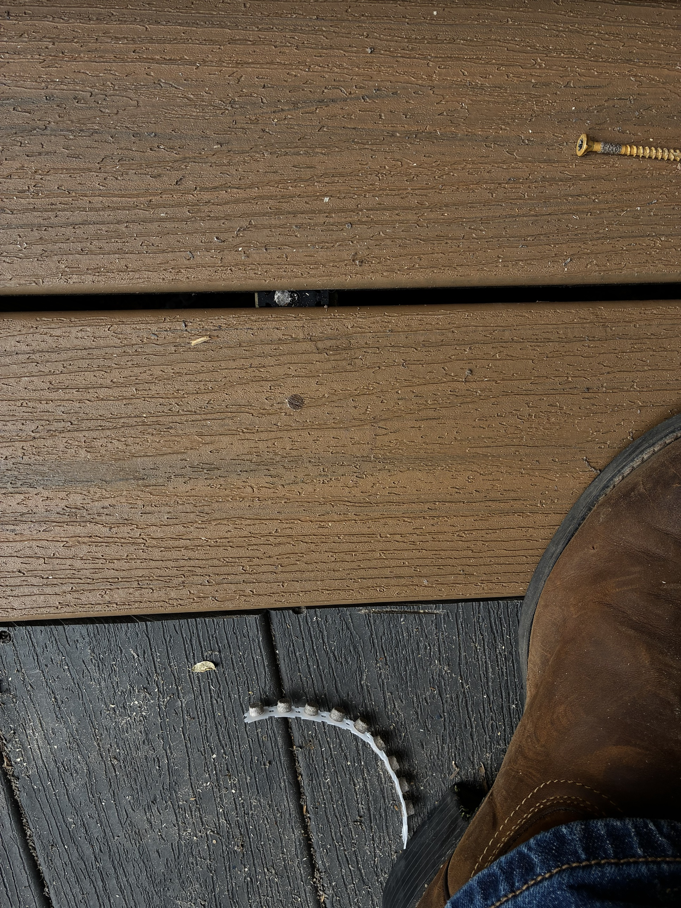

Imagine never staining
your deck again
your deck again
BEFORE
AFTER
Same lake house.
New composite deck.
New composite deck.
No stain. No sanding.
No splinters.
No splinters.
Just coffee
and the lake ☕
and the lake ☕